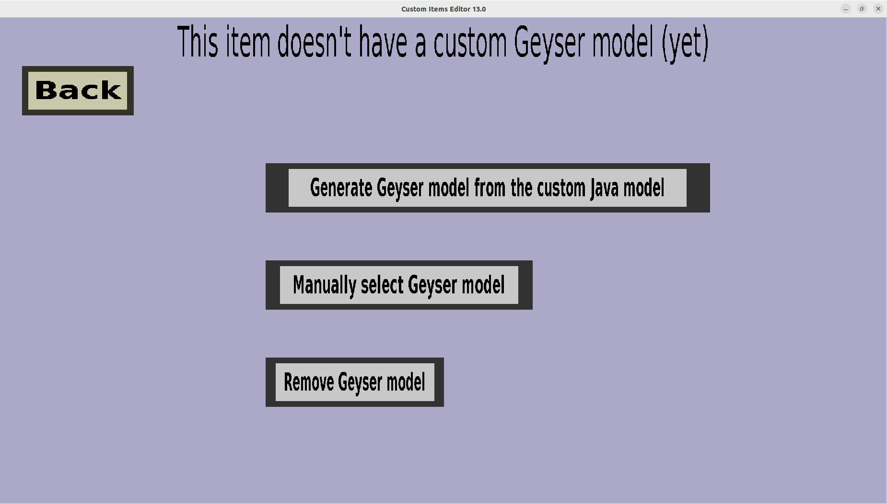

The Geyser model menu can be used to edit the Geyser/Bedrock edition model of a custom item. This page should
look like this:

Unlike most other resources, the resourcepack generator does not automatically put custom item models in the
Geyser resourcepack (because I couldn't find a way to handle this efficiently). Instead, you need to select
the Bedrock item model in this menu, or tell the Editor to convert the Java edition model. There are 2 options
to do this:
-
Generate Geyser model from the custom Java model: This option requires the custom item to already
have a custom Java edition item model. It will send this model to my VPS, which will use the
java2bedrock.sh script to automatically convert
it to a Bedrock edition item model. This option is expected to take several seconds (unless your model
is very large). The quality of this converter is usually reasonable, but if you don't like it, you will
have to use the second option and do it yourself.
-
Manually select Geyser model: This option lets you select the animation file, attachable file,
model file, and texture manually. This is more flexible than automatic conversion, but also a lot more work.
See this page for more information.